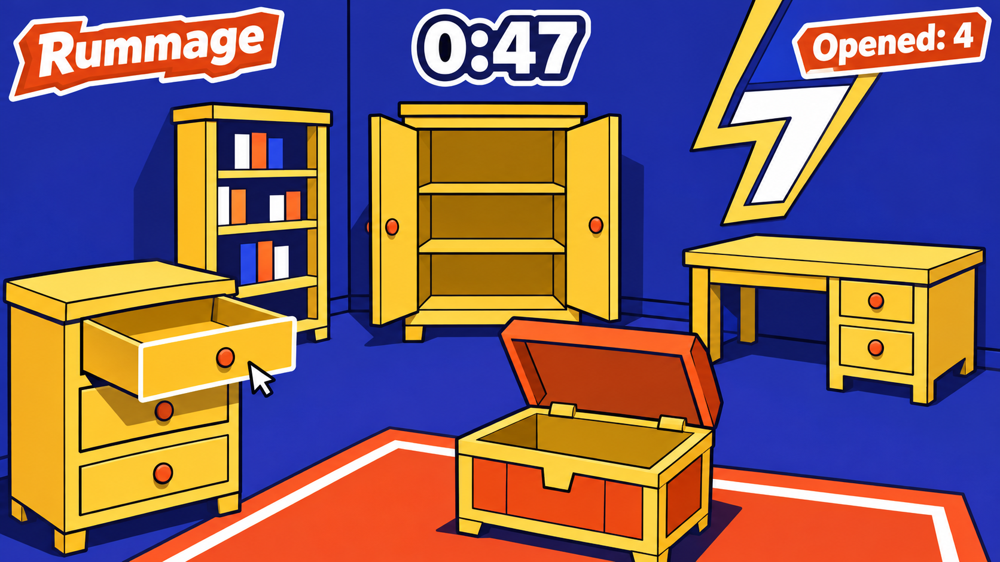

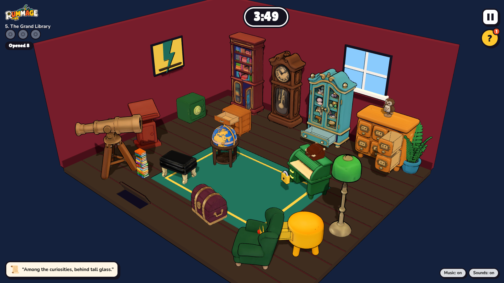
Play: rummage-game.vercel.app · modelscope.ai/studios/heisemma/rummage · Source: github.com/emmaGH1/rummage
Manycore Aholo Global 3D AI Hackathon · November 2026 · built with Aholo Lux3D (text-to-3D + articulation)
Most AI 3D generators give you a statue: a nice shell you can look at but not use. Lux3D can also split a model into parts and give it working joints. Rummage is built on that one capability: if every generated drawer really slides and every door really swings, then a room full of generated furniture becomes a hide-and-seek board.
The wizard has lost the manor keys. Players rummage through five themed rooms: the Wizard's Study, the Captain's Cabin, the Haunted Kitchen, the Toy Workshop and the Grand Library. They open furniture to find keys before the clock runs out. Each room adds a mechanic: decoys (junk in some compartments), padlocks (find the little brass key first), mimics (lids that snap shut, +5 seconds) and riddles. After the five Day levels come five Night levels in the same rooms with the lights out: players search by flashlight, and one key is always in a secret spot built into the room (a picture that swings off the wall, a loose floorboard). A two-player Challenge mode lets one person hide a key anywhere, pick a time limit (30 s to unlimited) and send the link to a friend.
cartoonG1-Turbo PBR mesh with real-world size prediction, ~2 minEvery piece in the game went through this pipeline (script: tools/lux3d_probe.py). We logged each call with its prompt, task id and duration (docs/generation-log.md), and the in-game “Made with Lux3D” panel shows every piece's prompt, motion prompt, joints and timings. Tapping a card flies the camera to the piece and plays its joints.
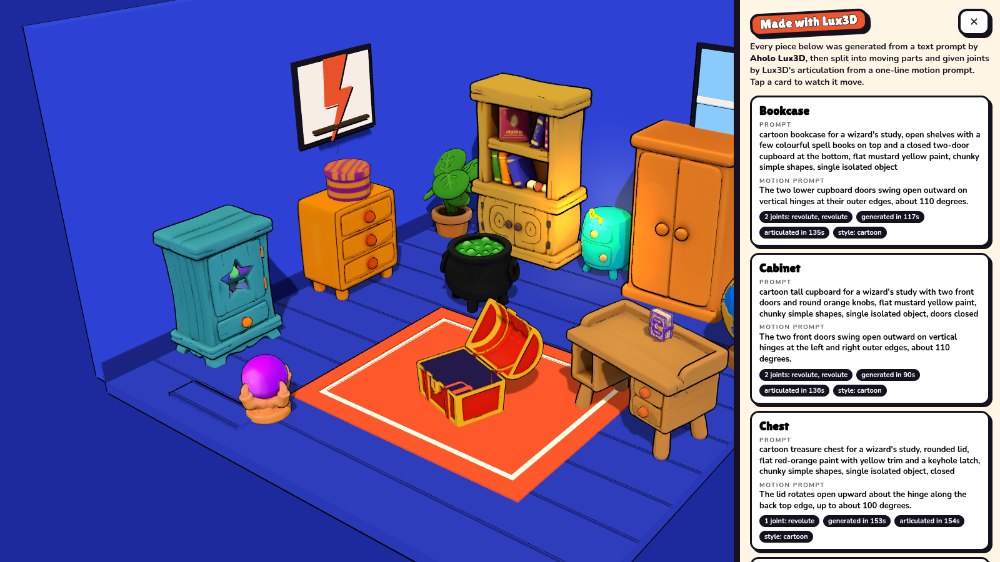
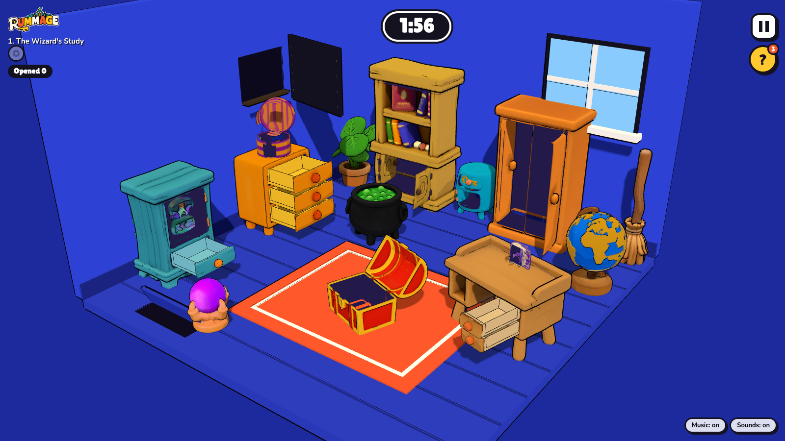
| When (UTC) | What |
|---|---|
| Nov 17 | Brief, rules and competitor scan. Ideas: shade canopy vs articulated hide-and-seek. Chose articulation as Lux3D's distinctive feature. |
| Nov 18 07:20 | Registered; capability probe: 3 objects → text-to-3D → articulation → part split. Articulation returned URDF + per-part GLBs on the first try. |
| 07:45 | Concept mockups (2 rounds, 9 styles). Picked Comic Ink. Six cartoon furniture pieces generated and articulated. |
| 08:15 | First playable: hide → time limit → seek → found, in the wizard's study. |
| 08:20–09:30 | Scope grew to the five-room manor: levels, keys, decoys, locks, mimics, riddles, stars. Pirate cabin, kitchen and workshop generated. |
| 09:30–10:15 | Grand library + 25 props; Made-with-Lux3D panel; automated playtest; first ModelScope deploy. |
| 10:15–11:00 | Phone layouts, sound toggles, strategic key hiding, deadline effects, six songs, Lux3D keys and decoys, 30 extra small pieces (55 in all). |
| 11:45–12:45 | Full-screen play when embedded on a phone; performance pass (meshes simplified to ~25% triangles, shadows only while parts move); HUD v3 with riddle scroll. |
| 12:50–13:20 | Secret spots in every room (swinging picture, loose floorboard); five Night levels with a flashlight; Day/Night manor map; new key logo; Vercel hosting. |
| 13:50– | Fixed-seed test links for every level, riddle clues for secret spots, report refresh, demo video. |
| Problem | Fix (our code, disclosed) |
|---|---|
| Generated furniture bodies are hollow shells: open a door and you see through to the wall. | A slightly shrunken, back-face-only dark copy of each body becomes its interior, so it always matches the body's shape. |
| Generated models come back at inconsistent scales (a 15 cm wardrobe next to a 2 m one). | Each piece gets a target height in the room layout and is scaled to it. |
| For some double-door pieces both doors got the same swing sign, so one opened inward. | At load time we test-open each vertical-hinge door; if it moves backwards we flip its direction. |
| Download URLs expire after about 2 hours, and large downloads were sometimes cut off. | Downloads use resumable retries; failed articulation calls can be re-run from the saved task record (tools/retry_articulation.py). |
| Race: a piece was sometimes measured before its body mesh loaded and appeared 2–3× too big. | Wait until every link's own visual has loaded before measuring. |
| Raw articulation output is about 30 MB per piece. | Compressed to about 1.5 MB with gltf-transform (WebP textures + meshopt), so a full room loads in seconds. |


photorealistic style. The articulation worked first time (3/3 pieces), but the look clashed with the art direction.
cartoon style and a palette in the prompt. Materials and shapes now match the comic look.Keys and decoys started as primitive shapes; the final game uses Lux3D-generated items (a golden skeleton key, a brass key, coins, a sock, a rubber duck…), with the primitives kept as a fallback.
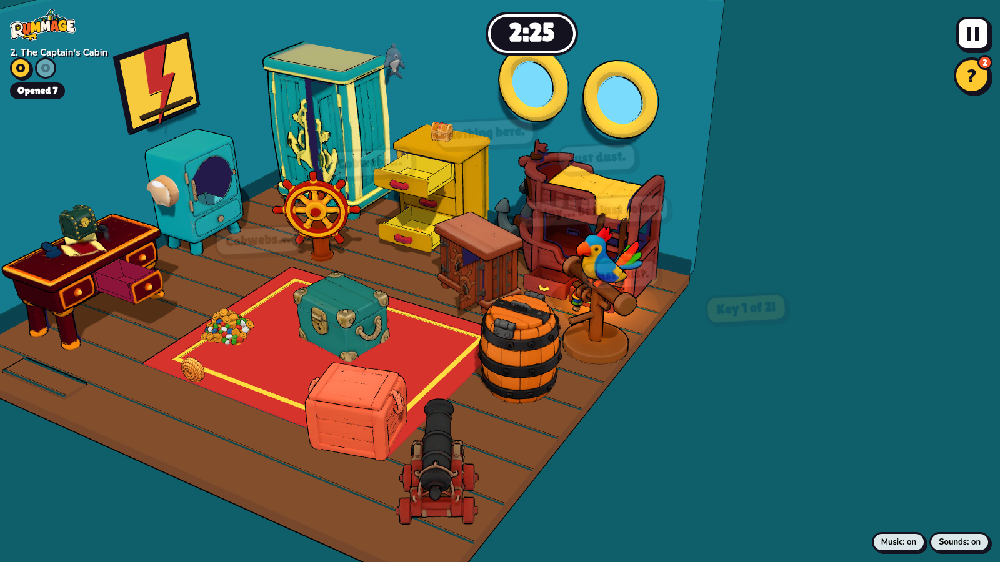
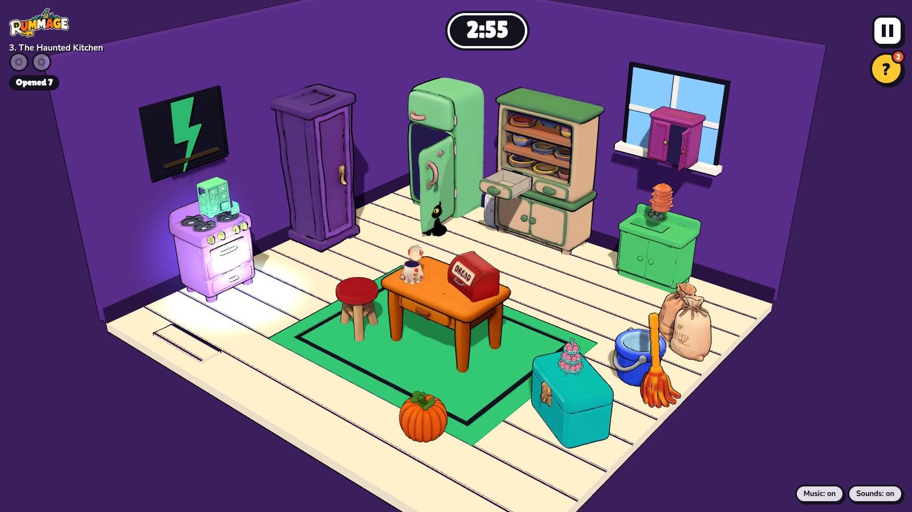

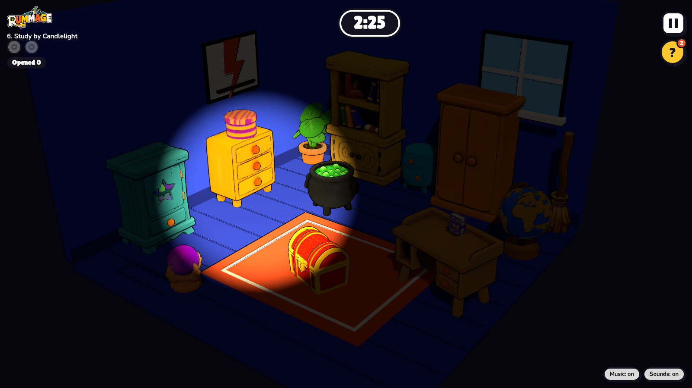
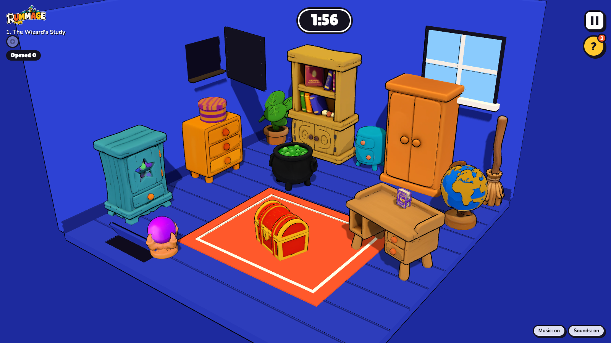


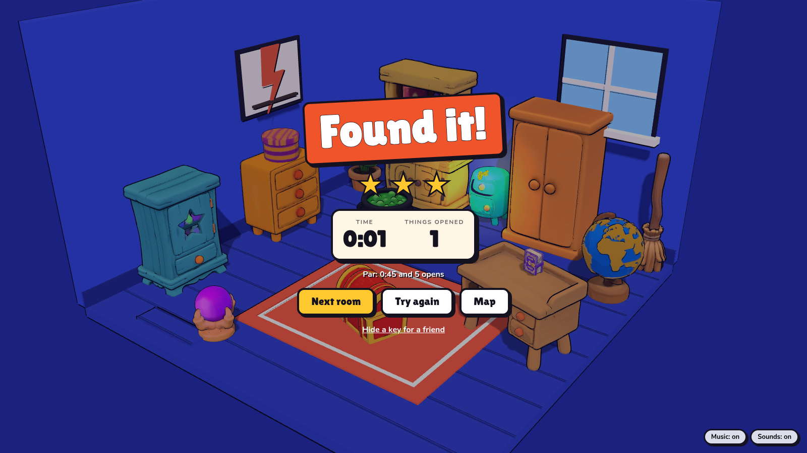
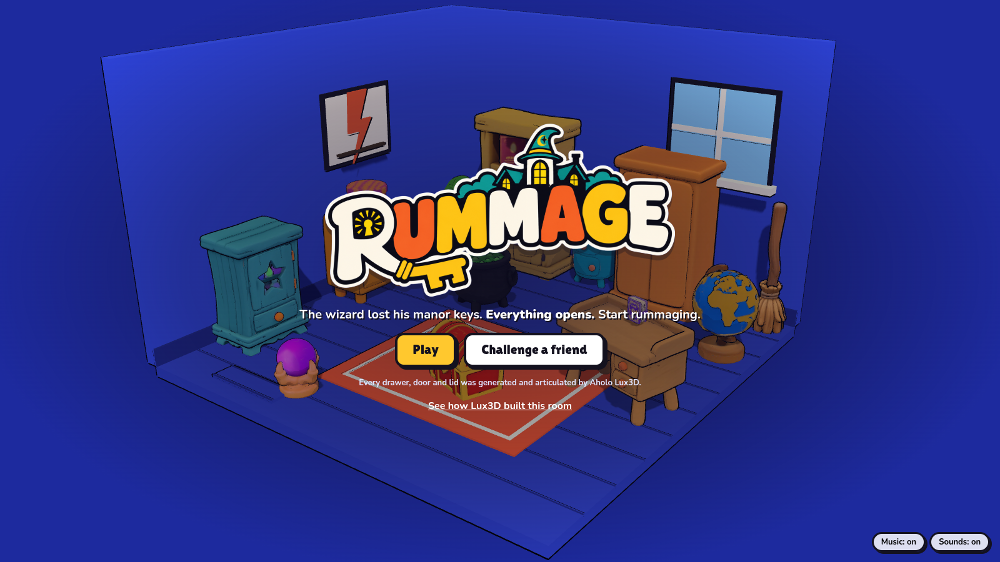
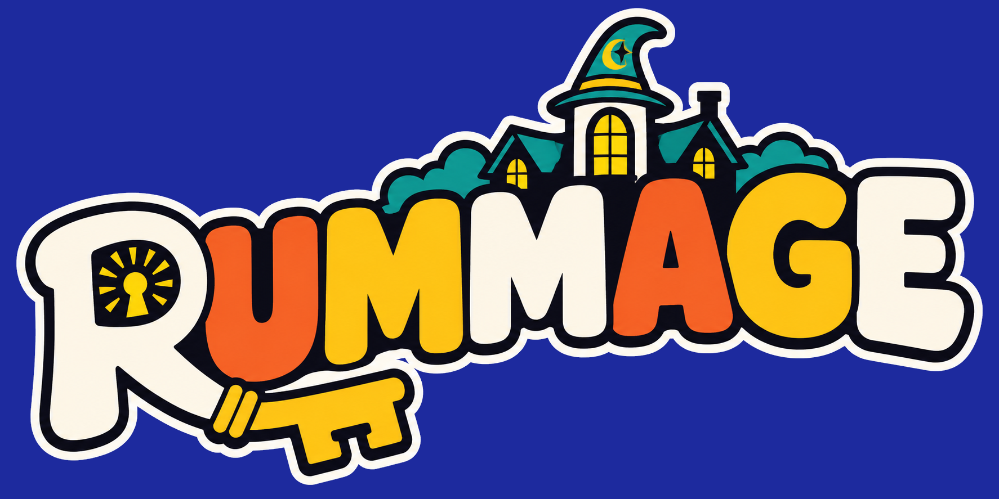
tools/playtest.mjs) plays all ten levels to a win in a headless browser and checks for errors. Test links (?level=7&seed=1) replay any level with a fixed key layout for manual testing.| Room | Articulated pieces | Hiding spots (joints) | Props |
|---|---|---|---|
| Wizard's Study | 9 | 16 | 5 |
| Captain's Cabin | 11 | 20 | 7 |
| Haunted Kitchen | 11 | 23 | 8 |
| Toy Workshop | 11 | 23 | 7 |
| Grand Library | 13 | 25 | 6 |
| Total | 55 | 107 | 43 (incl. items) |
| Piece | Prompt (abridged) | Joints | Gen / Artic. (s) |
|---|---|---|---|
| w-bookcase | bookcase for a wizard's study, open shelves with a few colourful spell books on top and a clos… | 2 (revolute) | 117 / 135 |
| w-cabinet | tall cupboard for a wizard's study with two front doors and round orange knobs, flat mustard y… | 2 (revolute) | 90 / 136 |
| w-drawers | chest of drawers for a wizard's study, three stacked drawers with round orange knobs, chunky s… | 3 (prismatic) | 118 / 145 |
| w-potion | small potion cabinet for a wizard's study with one front door that has a star window and a dra… | 2 (prismatic, revolute) | 108 / 198 |
| w-desk | wooden writing desk for a wizard's study with two drawers stacked on the right side, flat must… | 2 (prismatic) | 153 / 145 |
| w-chest | treasure chest for a wizard's study, rounded lid, flat red-orange paint with yellow trim and a… | 1 (revolute) | 153 / 154 |
| w-spellbox | box shaped like a thick purple spell book with a hinged front cover lid and gold star clasp, c… | 1 (revolute) | 126 / 189 |
| w-nightstand | small round wizard nightstand with one drawer and a little door below, teal paint with orange … | 2 (prismatic, revolute) | 99 / 162 |
| w-hatbox | round hat box with a lid, striped purple and yellow, closed | 1 (revolute) | 99 / 180 |
| p-wardrobe | pirate captain's tall wardrobe with two front doors and an anchor emblem, teal paint with yell… | 2 (revolute) | 108 / 144 |
| p-mapcabinet | pirate map cabinet with four wide flat drawers stacked vertically, mustard yellow paint with r… | 4 (prismatic) | 144 / 172 |
| p-bunk | pirate ship bunk bed with two storage drawers underneath the mattress, dark red wood with yell… | 2 (prismatic) | 135 / 162 |
| p-cupboard | small wall cupboard on legs with one round porthole-style door and a drawer below, teal paint … | 2 (prismatic, revolute) | 108 / 154 |
| p-desk | pirate captain's writing desk with three drawers in a row under the top, dark red paint with y… | 3 (prismatic) | 117 / 145 |
| p-seachest | pirate sea chest with a flat hinged lid, teal paint with rope handles and brass corners, closed | 1 (revolute) | 135 / 162 |
| p-barrel | wooden barrel with iron bands and a round hinged lid on top, orange wood with dark bands, lid … | 1 (revolute) | 108 / 171 |
| p-crate | wooden cargo crate with a hinged lid and rope handles, light orange wood planks, closed | 1 (revolute) | 144 / 153 |
| p-strongbox | small iron strongbox with a hinged lid and rivets, dark teal with gold lock plate, closed | 1 (revolute) | 108 / 135 |
| p-sidecabinet | short pirate side cabinet with two small doors and a ship's wheel carving, dark red wood, door… | 2 (revolute) | 135 / 135 |
| p-jewelbox | small treasure jewellery casket with a domed lid, gold with red gems, closed | 1 (revolute) | 99 / 188 |
| k-fridge | old-fashioned rounded refrigerator with one big front door and a small freezer door on top, pa… | 2 (revolute) | 117 / 181 |
| k-dresser | kitchen dresser cupboard with plates on open shelves on top, two doors below and two small dra… | 4 (prismatic, revolute) | 126 / 207 |
| k-sink | kitchen sink cabinet with a basin on top and two small doors underneath, mint green paint with… | 2 (revolute) | 90 / 171 |
| k-pantry | tall narrow pantry cupboard with one tall front door, purple paint with a crooked brass handle… | 1 (revolute) | 100 / 109 |
| k-stove | cast iron kitchen stove with an oven door at the front that opens downward and a drawer below,… | 2 (prismatic, revolute) | 144 / 198 |
| k-table | farmhouse kitchen table with one wide drawer under the tabletop, honey yellow wood | 1 (prismatic) | 108 / 99 |
| k-breadbin | bread bin with a hinged front flap lid, red enamel with a cream BREAD label, closed | 1 (revolute) | 108 / 153 |
| k-icebox | wooden icebox chest with a top lid that lifts up, teal paint with brass latch, closed | 1 (revolute) | 126 / 171 |
| k-spicerack | kitchen spice cabinet with six tiny drawers in a three by two grid, mint green with white knobs | 6 (prismatic) | 99 / 323 |
| k-cookiejar | ceramic cookie jar shaped like a fat cat with a hinged lid head, cream with orange spots, clos… | 1 (revolute) | 125 / 153 |
| k-wallcupboard | small kitchen wall cupboard with two doors, purple paint with brass knobs, doors closed | 2 (revolute) | 90 / 136 |
| t-toolcabinet | tall red metal tool cabinet with two doors on top and three drawers below, closed | 5 (prismatic, revolute) | 126 / 208 |
| t-dollhouse | dollhouse cabinet shaped like a little house with a pointed roof and two front doors that open… | 2 (revolute) | 117 / 145 |
| t-workbench | carpenter workbench with three drawers under the top, warm wood with blue drawers | 3 (prismatic) | 162 / 171 |
| t-cubbies | low shelf unit with four square cubby doors in a two by two grid, each door a different bright… | 4 (revolute) | 108 / 207 |
| t-toychest | toy chest painted with stars, bright blue with yellow lid and red handles, closed | 1 (revolute) | 108 / 145 |
| t-jackbox | jack-in-the-box toy, a cube box with red and yellow checker sides and a hinged top lid with a … | 1 (revolute) | 126 / 145 |
| t-trunk | circus steamer trunk with stripes and stars, red and white, rounded lid, closed | 1 (revolute) | 109 / 154 |
| t-paintbox | wooden paint supply box with a lid, colourful paint splashes, closed | 1 (revolute) | 144 / 136 |
| t-musicbox | wooden music box with a hinged lid and a tiny ballerina inside, pink and gold, closed | 1 (revolute) | 135 / 180 |
| t-toolbox | red metal toolbox with a hinged lid and a carry handle, closed | 1 (revolute) | 126 / 144 |
| t-lockers | row of three tall narrow toy lockers with doors, blue yellow and green, doors closed | 3 (revolute) | – / 144 |
| l-bookcase | tall library bookcase full of colourful books with two glass-panel doors on the lower half, de… | 2 (revolute) | 108 / 117 |
| l-clock | tall grandfather clock with a glass front door on the lower case showing the pendulum, dark wo… | 1 (revolute) | 126 / 108 |
| l-cabinet | curiosity cabinet with two tall glass doors and a drawer at the bottom, teal paint with gold t… | 3 (prismatic, revolute) | 126 / 180 |
| l-catalog | library card catalogue cabinet with six small drawers in a three by two grid with brass label … | 6 (prismatic) | 126 / 224 |
| l-safe | little iron safe with a round dial and a front door, dark green with gold dial, closed | 1 (revolute) | 108 / 171 |
| l-lectern | wooden lectern book stand with a slanted top and a small cupboard door in its base, red wood | 1 (revolute) | 161 / 117 |
| l-desk | librarian's writing desk with a roll top cover and two side drawers, dark green with gold hand… | 2 (prismatic) | 108 / 152 |
| l-globe | globe drinks cabinet, a large globe on a stand whose top half lifts open on a hinge, blue and … | 1 (revolute) | 108 / 189 |
| l-chest | ancient scroll chest with a domed lid and brass straps, purple wood, closed | 1 (revolute) | 161 / 152 |
| l-sidetable | round side table with one small drawer, mustard yellow with red knob | 1 (prismatic) | 135 / 117 |
| l-pianobench | piano bench with a hinged seat lid for sheet music storage, glossy black with gold legs, closed | 1 (revolute) | 125 / 197 |
| l-mapchest | low map chest with three very wide flat drawers, honey wood with brass pulls | 3 (prismatic) | 90 / 161 |
| l-writingbox | antique writing slope box with a slanted hinged lid and a small drawer at the front, mahogany … | 2 (prismatic, revolute) | 99 / 207 |
| Tool | Used for |
|---|---|
| Aholo Lux3D (API, G1-Turbo) | All furniture, props and items: text-to-3D generation, plus articulation (part split + joints) for every interactive piece. Core of the game. |
| three.js, urdf-loader | Real-time rendering; loading Lux3D's URDF joints and per-part GLBs. |
| gltf-transform | Compressing Lux3D models for the web (WebP textures, meshopt geometry). |
| Vite | Build tooling. Hosted as a static site on Vercel (rummage-game.vercel.app) and as a ModelScope Studio. |
| OpenAI image generation (via Codex) | 2D concept mockups for choosing the art direction (none appear in the game), and the logo and app icon. |
| Claude (Anthropic) and Codex (OpenAI) | AI coding assistants used to write and debug the game code and asset scripts. |
| Web Audio API | All music and sound effects are synthesized in code (no audio files). |
All code is original and lives in the repository above. Lux3D outputs are used under the Aholo product terms.